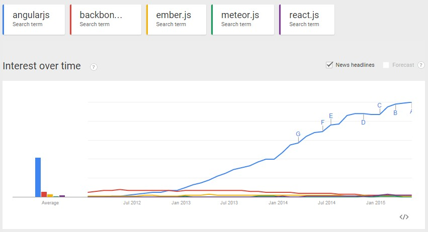

JavaScript Test Automation
For AngularJS Applications
Luis Alberto AvilesSeptember 2015
About Me
About Me
- Backend developer
- Frontend developer
Technologies
- Java
- JavaScript
JavaScript
- NodeJS
- AngularJS
Why AngularJS?
- MVC done right
- Two way data binding
- Directives
- Form validation
- Animation
- Testing
AngularJS vs Others
Testing?
- Unit Tests
- E2E Tests
E2E Testing
- How a user can interact with my application?
- Is my frontend communicating with my backend correctly?
- Are there synchronization issues between pages?
Protractor
- E2E test framework for AngularJS Applications
- NodeJS program
- Can run in a real browser
- Allow interact and simulate user actions
Jasmine
- Protractor test framework by default
- Defines the syntax of the tests
- It does not depend on any other JavaScript frameworks
Architecture Of E2E Tests

Writing E2E Tests For AngularJS Applications
- Protractor needs SPEC file(s)
- Protractor needs a CONFIGURATION file
Writing E2E Tests - spec.js
// spec.js
describe('Protractor Demo App', function() {
it('should have a title', function() {
browser.get('http://juliemr.github.io/protractor-demo/');
expect(browser.getTitle()).toEqual('Super Calculator');
});
});
Writing E2E Tests - conf.js
// conf.js
exports.config = {
baseUrl: 'http://localhost:9000',
seleniumAddress: 'http://127.0.0.1:4444/wd/hub',
capabilities: {
'browserName': 'chrome'
},
specs: ['spec.js'],
framework: 'jasmine',
}
Writing E2E Tests - conf.js
// conf.js
exports.config = {
baseUrl: 'http://localhost:9000',
directConnect: true,
capabilities: {
'browserName': 'chrome'
},
specs: ['spec.js'],
framework: 'jasmine',
}
Running E2E Tests
$ protractor conf.js
Browser
// browser is Protractor's proxy for the Selenium WebDriver
browser.get()
browser.quit()
browser.executeScript()
browser.executeAsyncScript()
browser.wait()
browser.getTitle()
browser.refresh()
browser.getCurrentUrl()
browser.takeScreenShot()
Element Locators
// find an element using a css selector
by.css('.myclass')
// find an element with the given id
by.id('myid')
// find an element with a certain ng-model
by.model('name')
// find an element bound to the given variable
by.binding('bindingname')
Using Locators
element(by.css('some-css'));
element(by.model('item.name'));
element(by.binding('item.name'));
Element Actions
var el = element(locator);
// Click on the element
el.click();
// Send keys to the element (usually an input)
el.sendKeys('my text');
// Clear the text in an element (usually an input)
el.clear();
// Get the value of an attribute, for example, get the value of an input
el.getAttribute('value');
Demo
More About E2E Testing...
- Page Object Pattern
- Reporters(HTML, XML)
- Screenshots!
- Debugging
PROTRACTOR
is awesome
:-)
Thank You!